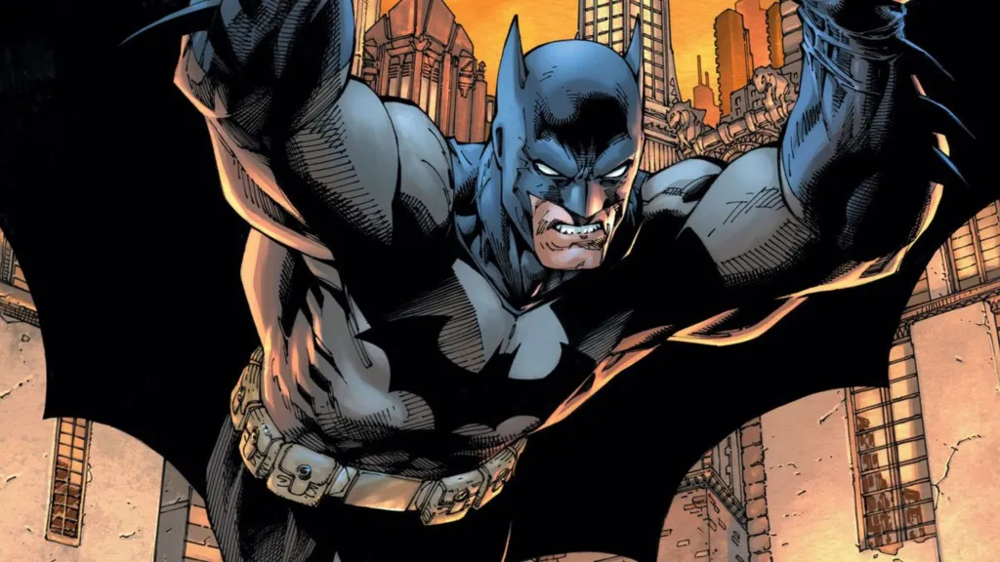

O Batman é ético ao não matar o Coringa?

É o ciclo sem fim que assombra Gotham City: o Coringa comete atrocidades, o Batman o captura, ele escapa do Asilo Arkham e tudo recomeça. Essa dinâmica levanta uma das questões mais complexas e debatidas: a recusa do Batman em matar o Coringa é um ato de heroísmo supremo ou uma falha moral que custa inúmeras vidas inocentes?
Afinal, o que é mais ético? Manter-se fiel a um código moral absoluto de não tirar uma vida, mesmo que isso permita que o mal continue a prosperar? Ou tomar uma decisão drástica que, embora terrível, salvaria incontáveis pessoas no futuro? A resposta para essa pergunta coloca em rota de colisão duas das maiores correntes da filosofia, transformando um dilema de super-herói em uma profunda questão sobre a natureza da justiça.
Vamos aproveitar este tema e analisar a ética do Batman sob a lupa da Deontologia de Kant e do Utilitarismo de Mill. Exploraremos os argumentos de ambos os lados para entender as profundas implicações do código do Cavaleiro das Trevas. Prepare-se para decidir se o maior herói de Gotham é também, de certa forma, cúmplice de seu maior vilão.
O Código Moral do Batman: Por Que Ele Não Mata?
A base de todo o debate sobre a ética do Batman está em sua regra de ouro: ele se recusa a matar. Segundo ele, tirar uma vida o tornaria igual aos criminosos que ele combate. Justo, né? Mas e quando o inimigo é o Coringa? Um cara que já matou centenas, torturou o Robin, e ainda consegue escapar da prisão como quem troca de roupa?
A lógica do Batman é clara: ele acredita na justiça, não na vingança. Para ele, quebrar esse código significaria cruzar uma linha que ele talvez nunca mais consiga desfazer. É como se o símbolo do morcego deixasse de representar esperança e virasse só mais um justiceiro violento.
+ Leia mais: Quanto custa ser o Batman?
O Dilema Ético: Deontologia vs. Utilitarismo
Para analisar se a decisão do Batman é ética, podemos recorrer a duas grandes correntes da filosofia moral que oferecem respostas opostas e que podem nos ajudar a entender esse debate:
1. A Visão Deontológica: Matar é Sempre Errado
A ideia aqui é simples: o que importa são os princípios, não as consequências. Segundo Immanuel Kant , existe um dever moral que vale para todo mundo e ponto final. Ou seja: matar é errado, sempre. Não importa quem, nem o porquê.
Se aplicarmos isso ao Batman, ele age exatamente como Kant defende. Mesmo com todo o mal que o Coringa faz, ele acredita que, ao matar, estaria violando um princípio fundamental. E isso comprometeria sua própria identidade como herói.
2. A Visão Utilitarista: O Bem Maior Acima de Tudo
Já para John Stuart Mill , a lógica é oposta: a melhor ação é aquela que gera o maior bem para o maior número de pessoas. Ou seja, se matar o Coringa salvaria dezenas (ou centenas) de inocentes, então talvez essa seja a escolha mais moral.
Do ponto de vista utilitarista, manter o Coringa vivo é uma irresponsabilidade. Ele já provou que vai continuar matando e, por mais que o Batman o capture, ele sempre volta. Nesse sentido, a insistência do Batman em poupá-lo pode ser vista como uma forma de negligência.
A Relação Simbiótica: Batman Precisa do Coringa?

Além da filosofia, existe uma camada psicológica: a recusa do Batman em matar o Coringa pode estar ligada à dependência mútua entre eles. Hora de fazer uma pausa e refletir: por que o Batman simplesmente não dá um fim nisso? Será que ele precisa tanto do Coringa quanto o contrário? Alguns fãs já levantaram essa teoria: de que são duas metades da mesma moeda.
A verdade é que os dois são definidos um pelo outro. Enquanto o Batman representa a ordem e a justiça, o Coringa é o caos puro. Será que Batman tem medo do que pode se tornar sem o Coringa como contraste? Talvez o maior medo do Homem-Morcego seja perder o controle e virar aquilo que ele mais combate.
E no mundo real, como seria?
Vamos trazer isso pro nosso cotidiano. Imagine que você é um policial ou um juiz, e precisa tomar uma decisão: seguir a lei ou abrir uma exceção perigosa para evitar um mal maior?
Esse tipo de dilema acontece muito mais do que a gente imagina. Por exemplo:
- Uma pessoa pode invadir um sistema se for para salvar vidas?
- Um líder pode sacrificar poucos para salvar milhares?
São dilemas parecidos com o que vemos nos quadrinhos, mas que mostram como essas escolhas não são preto no branco.
Em outros filmes e séries, esse debate também aparece. Em “O Justiceiro”, vemos um vigilante que mata sem pensar duas vezes, seguindo a lógica do utilitarismo. Já no universo Marvel, o Capitão América sempre tenta manter sua bússola moral inabalável mais “kantiano”, por assim dizer.
O interessante é que esses dilemas refletem muito sobre a sociedade em que vivemos. Afinal, quantas vezes somos levados a escolher entre certo e eficaz? Entre justiça e resultado?
O Batman é Ético ou Negligente?
Não existe uma resposta única. Mas podemos dizer que:
- Do ponto de vista ético-deontológico: o Batman está certo em manter seus princípios e se recusar a matar.
- Do ponto de vista utilitarista: talvez ele esteja colocando vidas inocentes em risco por causa de um ideal.
O que você acha? Será que o Batman deveria abrir uma exceção e acabar com o Coringa de uma vez por todas? Ou será que sua força está justamente em continuar resistindo ao desejo de se tornar juiz, júri e executor?
Discutir se o Batman é ético ao não matar o Coringa é mais do que uma curiosidade nerd. É uma forma de pensar sobre o mundo real, sobre nossas escolhas e sobre os limites da moralidade.
Talvez seja por isso que o universo dos quadrinhos nos fascina tanto: porque ele traduz dilemas universais em tramas épicas, com heróis mascarados, vilões insanos e, claro, muita ação.
Então, da próxima vez que você abrir uma HQ do Batman ou assistir a mais um filme cheio de perseguições e bombas, lembre que, por trás da capa e da sombra, existe um homem tentando navegar grandes dilemas morais como todos nós.
Quer saber mais?
Se curtiu essa discussão, dá uma olhada nessas referências para se aprofundar:
- “Fundamentação da Metafísica dos Costumes” – Immanuel Kant
- “Utilitarismo” – John Stuart Mill
- HQ “A Piada Mortal” – Alan Moore
- Filme “Batman: O Cavaleiro das Trevas” (2008)
- Série Batman: The Animated Series – episódios com Arlequina e Coringa
E aí, de que lado você está: do Batman ou do utilitarismo do Justiceiro? Conta pra gente nos comentários!
Leia Também
- Quanto custa ser o Batman?
- Você viveria como um dispensável?
- A empresa Lumon viola os direitos humanos?
- Magneto já salvou a humanidade (mais de uma vez)
- Snape é herói, vilão ou mártir?
Sharing is caring!